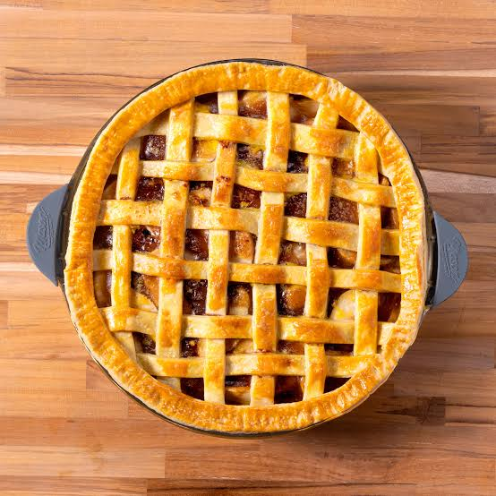

|

|
Ingredientes:
Para la masa:
- 1 y 1/4 tazas de harina de trigo
- 1/4 de taza de azúcar
- 1/2 taza de mantequilla fría, cortada en cubos pequeños
- 3-4 cucharadas de agua fría
Para el relleno:
- 6-7 manzanas (preferiblemente variedades como Granny Smith o Fuji)
- 1/2 taza de azúcar
- 1 cucharadita de canela en polvo
- 1 cucharada de jugo de limón
- 2 cucharadas de mantequilla derretida
|